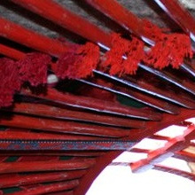
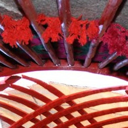
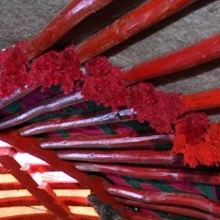
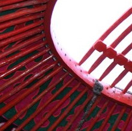
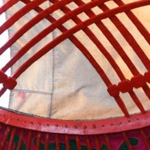
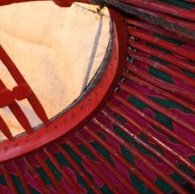
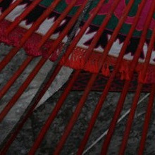
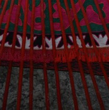
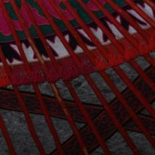

TUNDUK









Юрта состояла из деревянной конструкции; остов, собираемый из нескольких частей складных решетчатых стенок "кереге", придающих юрте в плане круглую форму. "Кереге" состояли из отдельных звеньев "канат", над которыми на жердях "уук" поднимали купол юрты - "тундук"